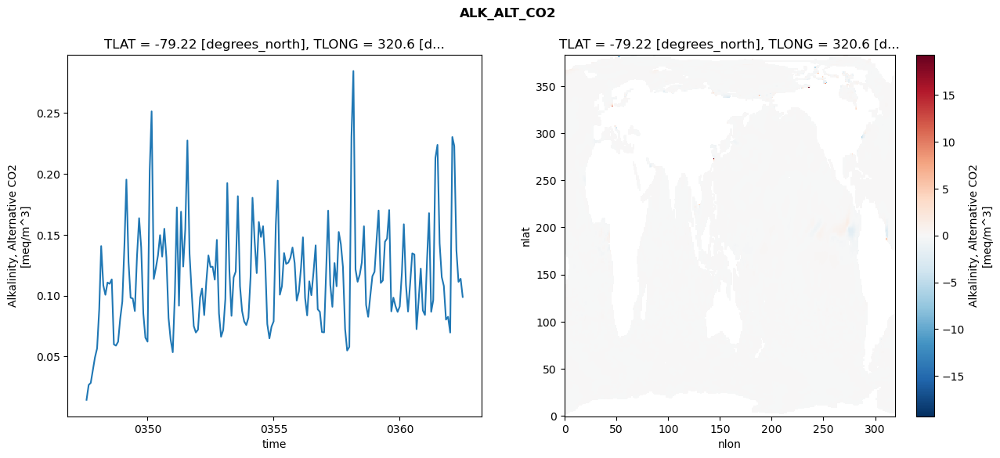
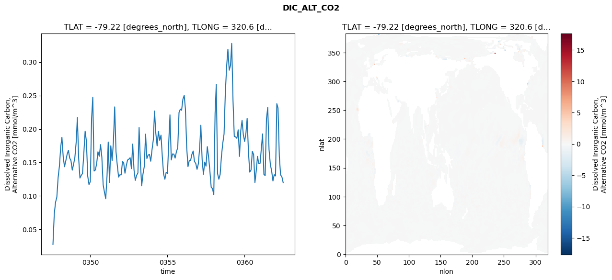
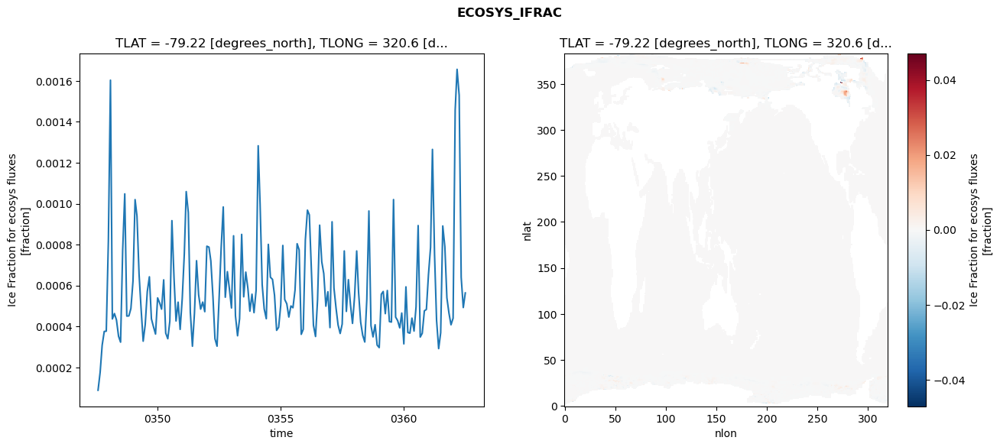
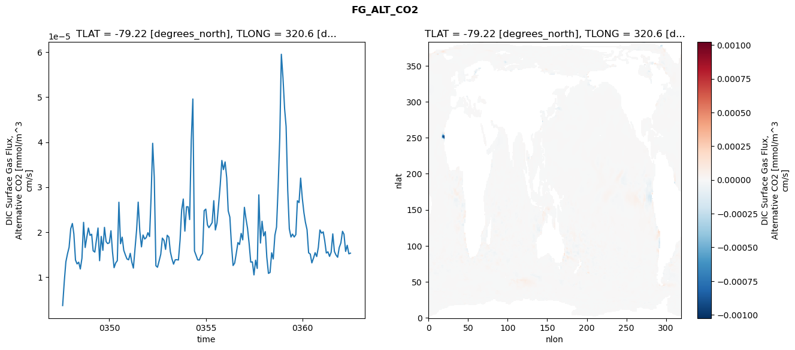

glb-dor_North_Atlantic_basin_017_1999-07-01_00070#
Simulation details#
Case: smyle.cdr-atlas-v0.glb-dor_North_Atlantic_basin_017_1999-07-01_00070.001
Basin: North_Atlantic_basin
Polygon: 17.0
Start date: 1999-07
Show code cell source Hide code cell source
import xarray as xr
import matplotlib.pyplot as plt
Show code cell source Hide code cell source
zarr_store = "/path/to/zarr/store"
# Parameters
zarr_store = "/global/cfs/projectdirs/m4746/Projects/Ocean-CDR-Atlas-v0/data/validation/smyle.cdr-atlas-v0.glb-dor_North_Atlantic_basin_017_1999-07-01_00070.001.validation.zarr"
Show code cell source Hide code cell source
%%time
ds_o = xr.open_zarr(zarr_store).compute()
ds_o
CPU times: user 629 ms, sys: 495 ms, total: 1.12 s
Wall time: 1.35 s
<xarray.Dataset> Size: 2MB
Dimensions: (nlat: 384, nlon: 320, time: 180)
Coordinates:
TLAT float64 8B -79.22
TLONG float64 8B 320.6
ULAT float64 8B -78.95
ULONG float64 8B 321.1
* time (time) object 1kB 0347-08-01 00:00:00 ... 0362-07-01 0...
z_t float32 4B 500.0
Dimensions without coordinates: nlat, nlon
Data variables:
ALK_ALT_CO2_diff (nlat, nlon) float32 492kB nan nan nan ... nan nan nan
ALK_ALT_CO2_rmse (time) float64 1kB 0.01449 0.02672 ... 0.1139 0.09897
DIC_ALT_CO2_diff (nlat, nlon) float32 492kB nan nan nan ... nan nan nan
DIC_ALT_CO2_rmse (time) float64 1kB 0.0276 0.07305 ... 0.1285 0.1199
ECOSYS_IFRAC_diff (nlat, nlon) float32 492kB nan nan nan ... nan nan nan
ECOSYS_IFRAC_rmse (time) float64 1kB 8.818e-05 0.0001759 ... 0.0005639
FG_ALT_CO2_diff (nlat, nlon) float32 492kB nan nan nan ... nan nan nan
FG_ALT_CO2_rmse (time) float64 1kB 3.643e-06 9.021e-06 ... 1.53e-05xarray.Dataset
- nlat: 384
- nlon: 320
- time: 180
- TLAT()float64-79.22
- long_name :
- array of t-grid latitudes
- units :
- degrees_north
array(-79.22052261)
- TLONG()float64320.6
- long_name :
- array of t-grid longitudes
- units :
- degrees_east
array(320.56250892)
- ULAT()float64-78.95
- long_name :
- array of u-grid latitudes
- units :
- degrees_north
array(-78.95289509)
- ULONG()float64321.1
- long_name :
- array of u-grid longitudes
- units :
- degrees_east
array(321.12500894)
- time(time)object0347-08-01 00:00:00 ... 0362-07-...
- bounds :
- time_bound
- long_name :
- time
array([cftime.DatetimeNoLeap(347, 8, 1, 0, 0, 0, 0, has_year_zero=True), cftime.DatetimeNoLeap(347, 9, 1, 0, 0, 0, 0, has_year_zero=True), cftime.DatetimeNoLeap(347, 10, 1, 0, 0, 0, 0, has_year_zero=True), cftime.DatetimeNoLeap(347, 11, 1, 0, 0, 0, 0, has_year_zero=True), cftime.DatetimeNoLeap(347, 12, 1, 0, 0, 0, 0, has_year_zero=True), cftime.DatetimeNoLeap(348, 1, 1, 0, 0, 0, 0, has_year_zero=True), cftime.DatetimeNoLeap(348, 2, 1, 0, 0, 0, 0, has_year_zero=True), cftime.DatetimeNoLeap(348, 3, 1, 0, 0, 0, 0, has_year_zero=True), cftime.DatetimeNoLeap(348, 4, 1, 0, 0, 0, 0, has_year_zero=True), cftime.DatetimeNoLeap(348, 5, 1, 0, 0, 0, 0, has_year_zero=True), cftime.DatetimeNoLeap(348, 6, 1, 0, 0, 0, 0, has_year_zero=True), cftime.DatetimeNoLeap(348, 7, 1, 0, 0, 0, 0, has_year_zero=True), cftime.DatetimeNoLeap(348, 8, 1, 0, 0, 0, 0, has_year_zero=True), cftime.DatetimeNoLeap(348, 9, 1, 0, 0, 0, 0, has_year_zero=True), cftime.DatetimeNoLeap(348, 10, 1, 0, 0, 0, 0, has_year_zero=True), cftime.DatetimeNoLeap(348, 11, 1, 0, 0, 0, 0, has_year_zero=True), cftime.DatetimeNoLeap(348, 12, 1, 0, 0, 0, 0, has_year_zero=True), cftime.DatetimeNoLeap(349, 1, 1, 0, 0, 0, 0, has_year_zero=True), cftime.DatetimeNoLeap(349, 2, 1, 0, 0, 0, 0, has_year_zero=True), cftime.DatetimeNoLeap(349, 3, 1, 0, 0, 0, 0, has_year_zero=True), cftime.DatetimeNoLeap(349, 4, 1, 0, 0, 0, 0, has_year_zero=True), cftime.DatetimeNoLeap(349, 5, 1, 0, 0, 0, 0, has_year_zero=True), cftime.DatetimeNoLeap(349, 6, 1, 0, 0, 0, 0, has_year_zero=True), cftime.DatetimeNoLeap(349, 7, 1, 0, 0, 0, 0, has_year_zero=True), cftime.DatetimeNoLeap(349, 8, 1, 0, 0, 0, 0, has_year_zero=True), cftime.DatetimeNoLeap(349, 9, 1, 0, 0, 0, 0, has_year_zero=True), cftime.DatetimeNoLeap(349, 10, 1, 0, 0, 0, 0, has_year_zero=True), cftime.DatetimeNoLeap(349, 11, 1, 0, 0, 0, 0, has_year_zero=True), cftime.DatetimeNoLeap(349, 12, 1, 0, 0, 0, 0, has_year_zero=True), cftime.DatetimeNoLeap(350, 1, 1, 0, 0, 0, 0, has_year_zero=True), cftime.DatetimeNoLeap(350, 2, 1, 0, 0, 0, 0, has_year_zero=True), cftime.DatetimeNoLeap(350, 3, 1, 0, 0, 0, 0, has_year_zero=True), cftime.DatetimeNoLeap(350, 4, 1, 0, 0, 0, 0, has_year_zero=True), cftime.DatetimeNoLeap(350, 5, 1, 0, 0, 0, 0, has_year_zero=True), cftime.DatetimeNoLeap(350, 6, 1, 0, 0, 0, 0, has_year_zero=True), cftime.DatetimeNoLeap(350, 7, 1, 0, 0, 0, 0, has_year_zero=True), cftime.DatetimeNoLeap(350, 8, 1, 0, 0, 0, 0, has_year_zero=True), cftime.DatetimeNoLeap(350, 9, 1, 0, 0, 0, 0, has_year_zero=True), cftime.DatetimeNoLeap(350, 10, 1, 0, 0, 0, 0, has_year_zero=True), cftime.DatetimeNoLeap(350, 11, 1, 0, 0, 0, 0, has_year_zero=True), cftime.DatetimeNoLeap(350, 12, 1, 0, 0, 0, 0, has_year_zero=True), cftime.DatetimeNoLeap(351, 1, 1, 0, 0, 0, 0, has_year_zero=True), cftime.DatetimeNoLeap(351, 2, 1, 0, 0, 0, 0, has_year_zero=True), cftime.DatetimeNoLeap(351, 3, 1, 0, 0, 0, 0, has_year_zero=True), cftime.DatetimeNoLeap(351, 4, 1, 0, 0, 0, 0, has_year_zero=True), cftime.DatetimeNoLeap(351, 5, 1, 0, 0, 0, 0, has_year_zero=True), cftime.DatetimeNoLeap(351, 6, 1, 0, 0, 0, 0, has_year_zero=True), cftime.DatetimeNoLeap(351, 7, 1, 0, 0, 0, 0, has_year_zero=True), cftime.DatetimeNoLeap(351, 8, 1, 0, 0, 0, 0, has_year_zero=True), cftime.DatetimeNoLeap(351, 9, 1, 0, 0, 0, 0, has_year_zero=True), cftime.DatetimeNoLeap(351, 10, 1, 0, 0, 0, 0, has_year_zero=True), cftime.DatetimeNoLeap(351, 11, 1, 0, 0, 0, 0, has_year_zero=True), cftime.DatetimeNoLeap(351, 12, 1, 0, 0, 0, 0, has_year_zero=True), cftime.DatetimeNoLeap(352, 1, 1, 0, 0, 0, 0, has_year_zero=True), cftime.DatetimeNoLeap(352, 2, 1, 0, 0, 0, 0, has_year_zero=True), cftime.DatetimeNoLeap(352, 3, 1, 0, 0, 0, 0, has_year_zero=True), cftime.DatetimeNoLeap(352, 4, 1, 0, 0, 0, 0, has_year_zero=True), cftime.DatetimeNoLeap(352, 5, 1, 0, 0, 0, 0, has_year_zero=True), cftime.DatetimeNoLeap(352, 6, 1, 0, 0, 0, 0, has_year_zero=True), cftime.DatetimeNoLeap(352, 7, 1, 0, 0, 0, 0, has_year_zero=True), cftime.DatetimeNoLeap(352, 8, 1, 0, 0, 0, 0, has_year_zero=True), cftime.DatetimeNoLeap(352, 9, 1, 0, 0, 0, 0, has_year_zero=True), cftime.DatetimeNoLeap(352, 10, 1, 0, 0, 0, 0, has_year_zero=True), cftime.DatetimeNoLeap(352, 11, 1, 0, 0, 0, 0, has_year_zero=True), cftime.DatetimeNoLeap(352, 12, 1, 0, 0, 0, 0, has_year_zero=True), cftime.DatetimeNoLeap(353, 1, 1, 0, 0, 0, 0, has_year_zero=True), cftime.DatetimeNoLeap(353, 2, 1, 0, 0, 0, 0, has_year_zero=True), cftime.DatetimeNoLeap(353, 3, 1, 0, 0, 0, 0, has_year_zero=True), cftime.DatetimeNoLeap(353, 4, 1, 0, 0, 0, 0, has_year_zero=True), cftime.DatetimeNoLeap(353, 5, 1, 0, 0, 0, 0, has_year_zero=True), cftime.DatetimeNoLeap(353, 6, 1, 0, 0, 0, 0, has_year_zero=True), cftime.DatetimeNoLeap(353, 7, 1, 0, 0, 0, 0, has_year_zero=True), cftime.DatetimeNoLeap(353, 8, 1, 0, 0, 0, 0, has_year_zero=True), cftime.DatetimeNoLeap(353, 9, 1, 0, 0, 0, 0, has_year_zero=True), cftime.DatetimeNoLeap(353, 10, 1, 0, 0, 0, 0, has_year_zero=True), cftime.DatetimeNoLeap(353, 11, 1, 0, 0, 0, 0, has_year_zero=True), cftime.DatetimeNoLeap(353, 12, 1, 0, 0, 0, 0, has_year_zero=True), cftime.DatetimeNoLeap(354, 1, 1, 0, 0, 0, 0, has_year_zero=True), cftime.DatetimeNoLeap(354, 2, 1, 0, 0, 0, 0, has_year_zero=True), cftime.DatetimeNoLeap(354, 3, 1, 0, 0, 0, 0, has_year_zero=True), cftime.DatetimeNoLeap(354, 4, 1, 0, 0, 0, 0, has_year_zero=True), cftime.DatetimeNoLeap(354, 5, 1, 0, 0, 0, 0, has_year_zero=True), cftime.DatetimeNoLeap(354, 6, 1, 0, 0, 0, 0, has_year_zero=True), cftime.DatetimeNoLeap(354, 7, 1, 0, 0, 0, 0, has_year_zero=True), cftime.DatetimeNoLeap(354, 8, 1, 0, 0, 0, 0, has_year_zero=True), cftime.DatetimeNoLeap(354, 9, 1, 0, 0, 0, 0, has_year_zero=True), cftime.DatetimeNoLeap(354, 10, 1, 0, 0, 0, 0, has_year_zero=True), cftime.DatetimeNoLeap(354, 11, 1, 0, 0, 0, 0, has_year_zero=True), cftime.DatetimeNoLeap(354, 12, 1, 0, 0, 0, 0, has_year_zero=True), cftime.DatetimeNoLeap(355, 1, 1, 0, 0, 0, 0, has_year_zero=True), cftime.DatetimeNoLeap(355, 2, 1, 0, 0, 0, 0, has_year_zero=True), cftime.DatetimeNoLeap(355, 3, 1, 0, 0, 0, 0, has_year_zero=True), cftime.DatetimeNoLeap(355, 4, 1, 0, 0, 0, 0, has_year_zero=True), cftime.DatetimeNoLeap(355, 5, 1, 0, 0, 0, 0, has_year_zero=True), cftime.DatetimeNoLeap(355, 6, 1, 0, 0, 0, 0, has_year_zero=True), cftime.DatetimeNoLeap(355, 7, 1, 0, 0, 0, 0, has_year_zero=True), cftime.DatetimeNoLeap(355, 8, 1, 0, 0, 0, 0, has_year_zero=True), cftime.DatetimeNoLeap(355, 9, 1, 0, 0, 0, 0, has_year_zero=True), cftime.DatetimeNoLeap(355, 10, 1, 0, 0, 0, 0, has_year_zero=True), cftime.DatetimeNoLeap(355, 11, 1, 0, 0, 0, 0, has_year_zero=True), cftime.DatetimeNoLeap(355, 12, 1, 0, 0, 0, 0, has_year_zero=True), cftime.DatetimeNoLeap(356, 1, 1, 0, 0, 0, 0, has_year_zero=True), cftime.DatetimeNoLeap(356, 2, 1, 0, 0, 0, 0, has_year_zero=True), cftime.DatetimeNoLeap(356, 3, 1, 0, 0, 0, 0, has_year_zero=True), cftime.DatetimeNoLeap(356, 4, 1, 0, 0, 0, 0, has_year_zero=True), cftime.DatetimeNoLeap(356, 5, 1, 0, 0, 0, 0, has_year_zero=True), cftime.DatetimeNoLeap(356, 6, 1, 0, 0, 0, 0, has_year_zero=True), cftime.DatetimeNoLeap(356, 7, 1, 0, 0, 0, 0, has_year_zero=True), cftime.DatetimeNoLeap(356, 8, 1, 0, 0, 0, 0, has_year_zero=True), cftime.DatetimeNoLeap(356, 9, 1, 0, 0, 0, 0, has_year_zero=True), cftime.DatetimeNoLeap(356, 10, 1, 0, 0, 0, 0, has_year_zero=True), cftime.DatetimeNoLeap(356, 11, 1, 0, 0, 0, 0, has_year_zero=True), cftime.DatetimeNoLeap(356, 12, 1, 0, 0, 0, 0, has_year_zero=True), cftime.DatetimeNoLeap(357, 1, 1, 0, 0, 0, 0, has_year_zero=True), cftime.DatetimeNoLeap(357, 2, 1, 0, 0, 0, 0, has_year_zero=True), cftime.DatetimeNoLeap(357, 3, 1, 0, 0, 0, 0, has_year_zero=True), cftime.DatetimeNoLeap(357, 4, 1, 0, 0, 0, 0, has_year_zero=True), cftime.DatetimeNoLeap(357, 5, 1, 0, 0, 0, 0, has_year_zero=True), cftime.DatetimeNoLeap(357, 6, 1, 0, 0, 0, 0, has_year_zero=True), cftime.DatetimeNoLeap(357, 7, 1, 0, 0, 0, 0, has_year_zero=True), cftime.DatetimeNoLeap(357, 8, 1, 0, 0, 0, 0, has_year_zero=True), cftime.DatetimeNoLeap(357, 9, 1, 0, 0, 0, 0, has_year_zero=True), cftime.DatetimeNoLeap(357, 10, 1, 0, 0, 0, 0, has_year_zero=True), cftime.DatetimeNoLeap(357, 11, 1, 0, 0, 0, 0, has_year_zero=True), cftime.DatetimeNoLeap(357, 12, 1, 0, 0, 0, 0, has_year_zero=True), cftime.DatetimeNoLeap(358, 1, 1, 0, 0, 0, 0, has_year_zero=True), cftime.DatetimeNoLeap(358, 2, 1, 0, 0, 0, 0, has_year_zero=True), cftime.DatetimeNoLeap(358, 3, 1, 0, 0, 0, 0, has_year_zero=True), cftime.DatetimeNoLeap(358, 4, 1, 0, 0, 0, 0, has_year_zero=True), cftime.DatetimeNoLeap(358, 5, 1, 0, 0, 0, 0, has_year_zero=True), cftime.DatetimeNoLeap(358, 6, 1, 0, 0, 0, 0, has_year_zero=True), cftime.DatetimeNoLeap(358, 7, 1, 0, 0, 0, 0, has_year_zero=True), cftime.DatetimeNoLeap(358, 8, 1, 0, 0, 0, 0, has_year_zero=True), cftime.DatetimeNoLeap(358, 9, 1, 0, 0, 0, 0, has_year_zero=True), cftime.DatetimeNoLeap(358, 10, 1, 0, 0, 0, 0, has_year_zero=True), cftime.DatetimeNoLeap(358, 11, 1, 0, 0, 0, 0, has_year_zero=True), cftime.DatetimeNoLeap(358, 12, 1, 0, 0, 0, 0, has_year_zero=True), cftime.DatetimeNoLeap(359, 1, 1, 0, 0, 0, 0, has_year_zero=True), cftime.DatetimeNoLeap(359, 2, 1, 0, 0, 0, 0, has_year_zero=True), cftime.DatetimeNoLeap(359, 3, 1, 0, 0, 0, 0, has_year_zero=True), cftime.DatetimeNoLeap(359, 4, 1, 0, 0, 0, 0, has_year_zero=True), cftime.DatetimeNoLeap(359, 5, 1, 0, 0, 0, 0, has_year_zero=True), cftime.DatetimeNoLeap(359, 6, 1, 0, 0, 0, 0, has_year_zero=True), cftime.DatetimeNoLeap(359, 7, 1, 0, 0, 0, 0, has_year_zero=True), cftime.DatetimeNoLeap(359, 8, 1, 0, 0, 0, 0, has_year_zero=True), cftime.DatetimeNoLeap(359, 9, 1, 0, 0, 0, 0, has_year_zero=True), cftime.DatetimeNoLeap(359, 10, 1, 0, 0, 0, 0, has_year_zero=True), cftime.DatetimeNoLeap(359, 11, 1, 0, 0, 0, 0, has_year_zero=True), cftime.DatetimeNoLeap(359, 12, 1, 0, 0, 0, 0, has_year_zero=True), cftime.DatetimeNoLeap(360, 1, 1, 0, 0, 0, 0, has_year_zero=True), cftime.DatetimeNoLeap(360, 2, 1, 0, 0, 0, 0, has_year_zero=True), cftime.DatetimeNoLeap(360, 3, 1, 0, 0, 0, 0, has_year_zero=True), cftime.DatetimeNoLeap(360, 4, 1, 0, 0, 0, 0, has_year_zero=True), cftime.DatetimeNoLeap(360, 5, 1, 0, 0, 0, 0, has_year_zero=True), cftime.DatetimeNoLeap(360, 6, 1, 0, 0, 0, 0, has_year_zero=True), cftime.DatetimeNoLeap(360, 7, 1, 0, 0, 0, 0, has_year_zero=True), cftime.DatetimeNoLeap(360, 8, 1, 0, 0, 0, 0, has_year_zero=True), cftime.DatetimeNoLeap(360, 9, 1, 0, 0, 0, 0, has_year_zero=True), cftime.DatetimeNoLeap(360, 10, 1, 0, 0, 0, 0, has_year_zero=True), cftime.DatetimeNoLeap(360, 11, 1, 0, 0, 0, 0, has_year_zero=True), cftime.DatetimeNoLeap(360, 12, 1, 0, 0, 0, 0, has_year_zero=True), cftime.DatetimeNoLeap(361, 1, 1, 0, 0, 0, 0, has_year_zero=True), cftime.DatetimeNoLeap(361, 2, 1, 0, 0, 0, 0, has_year_zero=True), cftime.DatetimeNoLeap(361, 3, 1, 0, 0, 0, 0, has_year_zero=True), cftime.DatetimeNoLeap(361, 4, 1, 0, 0, 0, 0, has_year_zero=True), cftime.DatetimeNoLeap(361, 5, 1, 0, 0, 0, 0, has_year_zero=True), cftime.DatetimeNoLeap(361, 6, 1, 0, 0, 0, 0, has_year_zero=True), cftime.DatetimeNoLeap(361, 7, 1, 0, 0, 0, 0, has_year_zero=True), cftime.DatetimeNoLeap(361, 8, 1, 0, 0, 0, 0, has_year_zero=True), cftime.DatetimeNoLeap(361, 9, 1, 0, 0, 0, 0, has_year_zero=True), cftime.DatetimeNoLeap(361, 10, 1, 0, 0, 0, 0, has_year_zero=True), cftime.DatetimeNoLeap(361, 11, 1, 0, 0, 0, 0, has_year_zero=True), cftime.DatetimeNoLeap(361, 12, 1, 0, 0, 0, 0, has_year_zero=True), cftime.DatetimeNoLeap(362, 1, 1, 0, 0, 0, 0, has_year_zero=True), cftime.DatetimeNoLeap(362, 2, 1, 0, 0, 0, 0, has_year_zero=True), cftime.DatetimeNoLeap(362, 3, 1, 0, 0, 0, 0, has_year_zero=True), cftime.DatetimeNoLeap(362, 4, 1, 0, 0, 0, 0, has_year_zero=True), cftime.DatetimeNoLeap(362, 5, 1, 0, 0, 0, 0, has_year_zero=True), cftime.DatetimeNoLeap(362, 6, 1, 0, 0, 0, 0, has_year_zero=True), cftime.DatetimeNoLeap(362, 7, 1, 0, 0, 0, 0, has_year_zero=True)], dtype=object) - z_t()float32500.0
- long_name :
- depth from surface to midpoint of layer
- positive :
- down
- units :
- centimeters
- valid_max :
- 537500.0
- valid_min :
- 500.0
array(500., dtype=float32)
- ALK_ALT_CO2_diff(nlat, nlon)float32nan nan nan nan ... nan nan nan nan
- cell_methods :
- time: mean
- grid_loc :
- 3111
- long_name :
- Alkalinity, Alternative CO2
- units :
- meq/m^3
array([[ nan, nan, nan, ..., nan, nan, nan], [ nan, nan, nan, ..., nan, nan, nan], [0.00756836, 0.00317383, 0.015625 , ..., nan, nan, nan], ..., [ nan, nan, nan, ..., nan, nan, nan], [ nan, nan, nan, ..., nan, nan, nan], [ nan, nan, nan, ..., nan, nan, nan]], dtype=float32) - ALK_ALT_CO2_rmse(time)float640.01449 0.02672 ... 0.1139 0.09897
- cell_methods :
- time: mean
- grid_loc :
- 3111
- long_name :
- Alkalinity, Alternative CO2
- units :
- meq/m^3
array([0.01449244, 0.02671987, 0.02840477, 0.03891754, 0.04932975, 0.05681451, 0.08915016, 0.14074114, 0.10847359, 0.10072535, 0.11081096, 0.10976648, 0.11341205, 0.06000241, 0.05902162, 0.06221385, 0.08088105, 0.09510538, 0.1421866 , 0.19530708, 0.12767477, 0.09832682, 0.09769144, 0.08740337, 0.13193663, 0.16365088, 0.13977412, 0.08531552, 0.06549773, 0.06228645, 0.20254045, 0.25132521, 0.11377878, 0.12254139, 0.1330437 , 0.14968862, 0.13210252, 0.15498394, 0.13116905, 0.08173457, 0.06410882, 0.05357383, 0.1025477 , 0.17249726, 0.09178866, 0.16894699, 0.12391534, 0.15444229, 0.22740812, 0.13446631, 0.10340163, 0.07504938, 0.06979954, 0.07209886, 0.09870643, 0.10581332, 0.08406996, 0.11097241, 0.13302575, 0.12365308, 0.1237425 , 0.11318844, 0.14583981, 0.08532487, 0.06623119, 0.07184689, 0.09725121, 0.19245106, 0.12017729, 0.08345133, 0.11495072, 0.11980776, 0.18170773, 0.10781958, 0.08745636, 0.07881468, 0.07590236, 0.08189782, 0.11539797, 0.18039674, 0.14475017, 0.1185574 , 0.16055898, 0.1482315 , 0.15703433, 0.12779633, 0.07667377, 0.06499162, 0.07454342, 0.07894139, 0.15771739, 0.19448715, 0.10085178, 0.10777593, 0.13499938, 0.12614268, 0.12715202, 0.13116278, 0.1395508 , 0.12678296, 0.095995 , 0.1033861 , 0.12307966, 0.147911 , 0.0981171 , 0.08380264, 0.11179705, 0.10041289, 0.11937061, 0.14132241, 0.08881803, 0.08678927, 0.0701672 , 0.06988102, 0.12310488, 0.16985091, 0.10874042, 0.09088822, 0.1267711 , 0.10772775, 0.15233042, 0.14222698, 0.12353223, 0.07267185, 0.05498942, 0.05795412, 0.23027314, 0.28444022, 0.121579 , 0.11141801, 0.11724485, 0.12729482, 0.15700214, 0.09236242, 0.08267242, 0.10004815, 0.11600563, 0.11963046, 0.14685379, 0.16993094, 0.11048991, 0.1125168 , 0.14428593, 0.1469585 , 0.17031533, 0.08710584, 0.09840682, 0.09144998, 0.08668415, 0.09118301, 0.11894331, 0.15863864, 0.10875642, 0.08697066, 0.110399 , 0.13479017, 0.13384419, 0.07251551, 0.09586629, 0.12226273, 0.08791766, 0.08419049, 0.13090062, 0.1677715 , 0.08675487, 0.09641356, 0.21310101, 0.22381699, 0.14298631, 0.11527183, 0.10802174, 0.08035447, 0.0826783 , 0.06973217, 0.23026721, 0.22293138, 0.1373206 , 0.11139095, 0.11391174, 0.09896681]) - DIC_ALT_CO2_diff(nlat, nlon)float32nan nan nan nan ... nan nan nan nan
- cell_methods :
- time: mean
- grid_loc :
- 3111
- long_name :
- Dissolved Inorganic Carbon, Alternative CO2
- units :
- mmol/m^3
array([[ nan, nan, nan, ..., nan, nan, nan], [ nan, nan, nan, ..., nan, nan, nan], [-0.00146484, -0.00512695, 0.00317383, ..., nan, nan, nan], ..., [ nan, nan, nan, ..., nan, nan, nan], [ nan, nan, nan, ..., nan, nan, nan], [ nan, nan, nan, ..., nan, nan, nan]], dtype=float32) - DIC_ALT_CO2_rmse(time)float640.0276 0.07305 ... 0.1285 0.1199
- cell_methods :
- time: mean
- grid_loc :
- 3111
- long_name :
- Dissolved Inorganic Carbon, Alternative CO2
- units :
- mmol/m^3
array([0.02759878, 0.07305171, 0.09047151, 0.09837972, 0.12734756, 0.14483422, 0.17336531, 0.18761544, 0.15790411, 0.14364196, 0.1525997 , 0.16188759, 0.16819936, 0.1565216 , 0.15278044, 0.1385496 , 0.1470779 , 0.15745346, 0.18026744, 0.21690016, 0.15594112, 0.12676246, 0.13079785, 0.13350972, 0.16345888, 0.19668987, 0.18174113, 0.12964449, 0.11704951, 0.12136964, 0.21613528, 0.24733332, 0.1372392 , 0.13879524, 0.14854815, 0.16600746, 0.15924019, 0.17666921, 0.1578995 , 0.11665531, 0.10581344, 0.09588112, 0.13031654, 0.18059576, 0.12028655, 0.17493738, 0.15289245, 0.1802579 , 0.23300338, 0.16603816, 0.14619917, 0.1282337 , 0.13163894, 0.13148197, 0.1515524 , 0.14960823, 0.13402419, 0.14478303, 0.15364602, 0.15488593, 0.15711798, 0.14080077, 0.17756433, 0.13870669, 0.12326943, 0.13075872, 0.13440378, 0.20216994, 0.15005951, 0.11519207, 0.13272758, 0.14379096, 0.19232418, 0.15591333, 0.16108543, 0.16203684, 0.15190921, 0.16923856, 0.18423725, 0.22688893, 0.19321045, 0.17476014, 0.19637328, 0.1831174 , 0.19082518, 0.15876293, 0.13277461, 0.12494075, 0.13530818, 0.1336794 , 0.18150946, 0.22111355, 0.15381606, 0.16277271, 0.16251807, 0.15654527, 0.16613562, 0.17203367, 0.22461306, 0.22964699, 0.22806952, 0.24452478, 0.25019366, 0.2301594 , 0.17255496, 0.14376747, 0.15290572, 0.15276821, 0.16215649, 0.16712344, 0.15160204, 0.14853736, 0.13975572, 0.14804827, 0.17179589, 0.20567291, 0.1538717 , 0.13238563, 0.15063272, 0.14448042, 0.17361783, 0.15793502, 0.13745994, 0.11304722, 0.11107597, 0.10191233, 0.2234308 , 0.26677752, 0.1332462 , 0.12499065, 0.13234197, 0.15925744, 0.17821237, 0.19248746, 0.25366234, 0.2936045 , 0.31910437, 0.28781965, 0.29513341, 0.32779793, 0.2424001 , 0.18889027, 0.18818645, 0.18608867, 0.19876935, 0.15911115, 0.19746856, 0.21278024, 0.19120255, 0.18144035, 0.19410708, 0.21583237, 0.16589641, 0.13561217, 0.13871015, 0.16662295, 0.16202965, 0.12000273, 0.13686997, 0.159068 , 0.14838028, 0.14885407, 0.17169556, 0.19265479, 0.13218382, 0.13041141, 0.21506353, 0.23218581, 0.16922177, 0.14685252, 0.1375406 , 0.12237995, 0.13180035, 0.12993989, 0.23774996, 0.23136348, 0.15910333, 0.13144932, 0.12851034, 0.11990356]) - ECOSYS_IFRAC_diff(nlat, nlon)float32nan nan nan nan ... nan nan nan nan
- cell_methods :
- time: mean
- grid_loc :
- 2110
- long_name :
- Ice Fraction for ecosys fluxes
- units :
- fraction
array([[ nan, nan, nan, ..., nan, nan, nan], [ nan, nan, nan, ..., nan, nan, nan], [2.3066998e-05, 2.5629997e-05, 3.1530857e-05, ..., nan, nan, nan], ..., [ nan, nan, nan, ..., nan, nan, nan], [ nan, nan, nan, ..., nan, nan, nan], [ nan, nan, nan, ..., nan, nan, nan]], dtype=float32) - ECOSYS_IFRAC_rmse(time)float648.818e-05 0.0001759 ... 0.0005639
- cell_methods :
- time: mean
- grid_loc :
- 2110
- long_name :
- Ice Fraction for ecosys fluxes
- units :
- fraction
array([8.81845656e-05, 1.75948516e-04, 3.08467588e-04, 3.75620039e-04, 3.76996101e-04, 8.17680341e-04, 1.60375646e-03, 4.36606845e-04, 4.63127145e-04, 4.31758638e-04, 3.52047916e-04, 3.23147891e-04, 7.71555538e-04, 1.04804318e-03, 4.50680449e-04, 4.51570262e-04, 4.87623387e-04, 6.21559560e-04, 1.01996644e-03, 9.40077842e-04, 6.55314912e-04, 4.87124311e-04, 3.28016075e-04, 4.08393163e-04, 5.70933429e-04, 6.42607885e-04, 4.37310249e-04, 3.98032357e-04, 3.62849941e-04, 5.39639745e-04, 5.14285030e-04, 4.84453185e-04, 6.27751394e-04, 3.67592405e-04, 3.39881610e-04, 4.25460539e-04, 9.17217484e-04, 6.38178118e-04, 4.26822871e-04, 5.18684589e-04, 3.85697059e-04, 5.36685989e-04, 7.57027812e-04, 1.05916051e-03, 9.56547510e-04, 4.68950587e-04, 3.03338579e-04, 4.64155037e-04, 7.21416374e-04, 5.54248089e-04, 4.84512718e-04, 5.19196648e-04, 4.72219190e-04, 7.92231188e-04, 7.87686488e-04, 7.20301979e-04, 5.46797898e-04, 3.40059527e-04, 3.03599269e-04, 5.34223525e-04, 7.84078655e-04, 9.84022554e-04, 5.42843941e-04, 6.67818105e-04, 5.84184736e-04, 4.90186372e-04, 8.43135388e-04, 4.51902258e-04, 3.54484722e-04, 4.37807624e-04, 8.50012901e-04, 5.44916107e-04, 6.65608139e-04, 5.86463386e-04, 4.74643830e-04, 5.57617221e-04, 4.67466005e-04, 5.77252279e-04, 1.28320722e-03, 9.97722096e-04, ... 3.85848585e-04, 8.23131763e-04, 9.68600981e-04, 9.45512675e-04, 6.73467192e-04, 4.05451798e-04, 3.51010812e-04, 5.30999800e-04, 8.95001282e-04, 7.16377342e-04, 6.58531884e-04, 4.99114741e-04, 5.69530854e-04, 3.94390222e-04, 9.11566363e-04, 5.87894268e-04, 4.89180378e-04, 4.07332740e-04, 3.65591292e-04, 4.11657638e-04, 7.69051183e-04, 4.73536951e-04, 6.28625713e-04, 5.05885603e-04, 4.14941018e-04, 5.47618747e-04, 7.68895608e-04, 5.66769372e-04, 4.20655608e-04, 3.57023291e-04, 3.23870956e-04, 5.32264560e-04, 9.64443518e-04, 4.04168526e-04, 3.48940658e-04, 4.08363222e-04, 3.08892393e-04, 2.96542380e-04, 5.57499919e-04, 5.70946384e-04, 4.62674454e-04, 5.75760518e-04, 4.23840121e-04, 4.21414740e-04, 1.02024889e-03, 4.45787784e-04, 4.28745717e-04, 3.93205516e-04, 4.65547058e-04, 3.14842936e-04, 5.93512079e-04, 3.70480665e-04, 3.67203163e-04, 4.40646476e-04, 3.77454998e-04, 4.95951507e-04, 8.93148332e-04, 3.48237953e-04, 3.66711955e-04, 4.76407190e-04, 4.82918642e-04, 6.53269157e-04, 7.86270513e-04, 1.26538960e-03, 7.53000707e-04, 4.30088354e-04, 2.91695614e-04, 3.69159026e-04, 8.91171538e-04, 7.89232108e-04, 5.39957049e-04, 4.64708925e-04, 4.08125080e-04, 4.40217660e-04, 1.45791230e-03, 1.65679807e-03, 1.53029732e-03, 6.40201580e-04, 4.92481967e-04, 5.63898267e-04]) - FG_ALT_CO2_diff(nlat, nlon)float32nan nan nan nan ... nan nan nan nan
- cell_methods :
- time: mean
- grid_loc :
- 2110
- long_name :
- DIC Surface Gas Flux, Alternative CO2
- units :
- mmol/m^3 cm/s
array([[ nan, nan, nan, ..., nan, nan, nan], [ nan, nan, nan, ..., nan, nan, nan], [-7.6344691e-09, -4.0802206e-09, 2.2059652e-09, ..., nan, nan, nan], ..., [ nan, nan, nan, ..., nan, nan, nan], [ nan, nan, nan, ..., nan, nan, nan], [ nan, nan, nan, ..., nan, nan, nan]], dtype=float32) - FG_ALT_CO2_rmse(time)float643.643e-06 9.021e-06 ... 1.53e-05
- cell_methods :
- time: mean
- grid_loc :
- 2110
- long_name :
- DIC Surface Gas Flux, Alternative CO2
- units :
- mmol/m^3 cm/s
array([3.64301569e-06, 9.02148804e-06, 1.33763333e-05, 1.51711567e-05, 1.66016257e-05, 2.07553138e-05, 2.19027921e-05, 1.95929559e-05, 1.37729730e-05, 1.29073347e-05, 1.32888458e-05, 1.17756729e-05, 1.41717922e-05, 2.21499190e-05, 1.65569700e-05, 1.88732594e-05, 2.08871622e-05, 1.92598283e-05, 1.95069307e-05, 1.58326013e-05, 1.55356466e-05, 1.81361418e-05, 2.08875745e-05, 1.36233429e-05, 1.90150106e-05, 1.59314087e-05, 2.10348827e-05, 1.78642853e-05, 1.74303380e-05, 1.76127981e-05, 2.02818377e-05, 1.57338254e-05, 1.20692228e-05, 1.31095909e-05, 1.36343992e-05, 2.66254540e-05, 1.74008568e-05, 1.88594300e-05, 1.59460250e-05, 1.49005475e-05, 1.40136990e-05, 1.38190215e-05, 1.52595280e-05, 1.33500147e-05, 1.19809660e-05, 1.61096745e-05, 2.04544333e-05, 2.66499213e-05, 2.01508474e-05, 1.67071018e-05, 1.93366257e-05, 1.84418909e-05, 1.87749247e-05, 1.98519031e-05, 1.89963107e-05, 2.74520583e-05, 3.97392869e-05, 3.21823690e-05, 1.24980753e-05, 1.21666129e-05, 1.35759356e-05, 1.50557587e-05, 1.86492549e-05, 1.81427920e-05, 1.61420671e-05, 1.92797824e-05, 1.88748494e-05, 1.56388450e-05, 1.40181145e-05, 1.28520066e-05, 1.38205709e-05, 1.38473718e-05, 1.37718465e-05, 1.81818984e-05, 2.48809990e-05, 2.73416065e-05, 2.01985852e-05, 2.56260695e-05, 2.56072330e-05, 2.27761193e-05, ... 3.38836470e-05, 3.55901105e-05, 3.20351949e-05, 2.46970131e-05, 2.33158058e-05, 1.72293781e-05, 1.25489490e-05, 1.30910194e-05, 1.52879911e-05, 1.76514757e-05, 1.72234565e-05, 1.96906398e-05, 1.82615801e-05, 2.54923800e-05, 2.28748662e-05, 2.08569793e-05, 1.73836518e-05, 1.33125252e-05, 1.33620322e-05, 1.04635955e-05, 1.37360480e-05, 1.19010650e-05, 2.82691621e-05, 1.75480240e-05, 2.23941638e-05, 1.91352723e-05, 2.00833250e-05, 1.44022549e-05, 1.08027513e-05, 1.09923747e-05, 1.53728409e-05, 1.40170231e-05, 1.92859679e-05, 2.11096659e-05, 2.98699644e-05, 4.09281189e-05, 5.95404916e-05, 5.42849646e-05, 4.73759071e-05, 4.34849157e-05, 2.92672266e-05, 2.07115460e-05, 1.88864952e-05, 1.95357412e-05, 1.88925817e-05, 1.94232299e-05, 2.69619032e-05, 2.65599536e-05, 3.19956534e-05, 2.75713322e-05, 2.43093779e-05, 2.21836697e-05, 2.05215823e-05, 1.53775279e-05, 1.50989572e-05, 1.31335620e-05, 1.41819174e-05, 1.54057874e-05, 1.45482563e-05, 1.66046349e-05, 2.04588209e-05, 1.97496940e-05, 2.00333656e-05, 1.81095042e-05, 1.53349033e-05, 1.55948003e-05, 1.45823641e-05, 1.54908775e-05, 1.95842598e-05, 1.56623922e-05, 1.48856911e-05, 1.43890214e-05, 1.65535781e-05, 1.75693254e-05, 2.01608012e-05, 1.94992619e-05, 1.56909893e-05, 1.70595647e-05, 1.51446935e-05, 1.53001188e-05])
- timePandasIndex
PandasIndex(CFTimeIndex([0347-08-01 00:00:00, 0347-09-01 00:00:00, 0347-10-01 00:00:00, 0347-11-01 00:00:00, 0347-12-01 00:00:00, 0348-01-01 00:00:00, 0348-02-01 00:00:00, 0348-03-01 00:00:00, 0348-04-01 00:00:00, 0348-05-01 00:00:00, ... 0361-10-01 00:00:00, 0361-11-01 00:00:00, 0361-12-01 00:00:00, 0362-01-01 00:00:00, 0362-02-01 00:00:00, 0362-03-01 00:00:00, 0362-04-01 00:00:00, 0362-05-01 00:00:00, 0362-06-01 00:00:00, 0362-07-01 00:00:00], dtype='object', length=180, calendar='noleap', freq='MS'))
Show code cell source Hide code cell source
variables = [v[:-5] for v in ds_o.variables if "_rmse" in v]
Show code cell source Hide code cell source
plt.rcParams.update({'figure.max_open_warning': 0})
for v in variables:
fig, axs = plt.subplots(1, 2, figsize=(15, 6))
ds_o[f"{v}_rmse"].plot(ax=axs[0])
ds_o[f"{v}_diff"].plot(ax=axs[1])
plt.suptitle(v, fontweight="bold")



